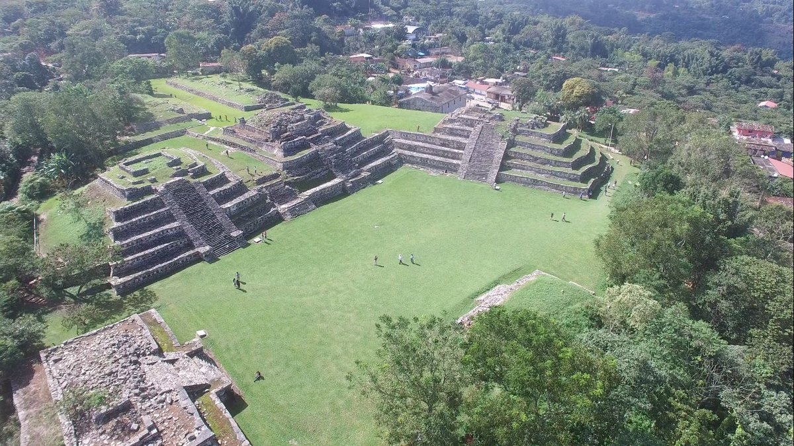

Zona Arqueológica de Yohualichan
- 
Ubicación
Yohualichan, Cuetzalan del Progreso, Puebla C.P. 73560
Cómo llegar
Se ubica a 11 kilómetros del Centro de Cuetzalan (20 minutos en automóvil particular) Deberá tomar la Carretera Cuetzalan – Rayón, pasando la comunidad de La Loma encontrará la desviación hacia Yohualichan; si requiere utilizar transporte público, deberá tomar las urvan Gratel A.C, cuya base está ubicada en la Calle Miguel Alvarado, (frente al Jardín de Niños Ismael Morante Alvarado, cerca del Coppel) o Huantiknemi A.C.
Costo de acceso
El costo de entrada es de $45.00 NOTA: No pagan estudiantes, profesores, jubilados y pensionados con credencial vigente. Mayores de 60 años y menores de 13 años con identificación oficial vigente
Horario de Atención
Martes a Sábado de 9:00 a 17:00 horas